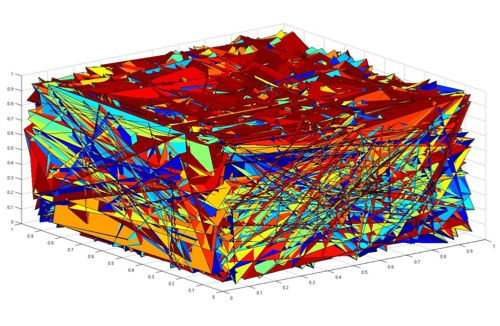

Research Interests: Theoretical and computational neuroscience, neuromorphic engineering, information theory, statistical mechanics, and bioinformatics.
Lane McIntosh
Voice: (760) 889-1550
Email: lmcintosh (at) stanford.edu
Our brains have an unbelievable capacity for processing sensory information, generating complex internal states, and producing a wide variety of behaviors. I'm interested in elucidating this powerful information processing machinery - how exactly does neural circuitry make computation and information transmission possible, how is information encoded and distributed, and how can we decode and repair these complicated processes?
Neurosciences PhD Program | 318 Campus Drive, Room S245 | Stanford, CA 94305
Ph.D. Student, Neurosciences
M.A., Mathematics
University of Hawaii (2010 - 2012)
B.A., Computational Neuroscience, Biological Sciences
The University of Chicago (2006 - 2010)
Voice: (760) 889-1550
Email: lmcintosh (at) stanford.edu
Our brains have an unbelievable capacity for processing sensory information, generating complex internal states, and producing a wide variety of behaviors. I'm interested in elucidating this powerful information processing machinery - how exactly does neural circuitry make computation and information transmission possible, how is information encoded and distributed, and how can we decode and repair these complicated processes?